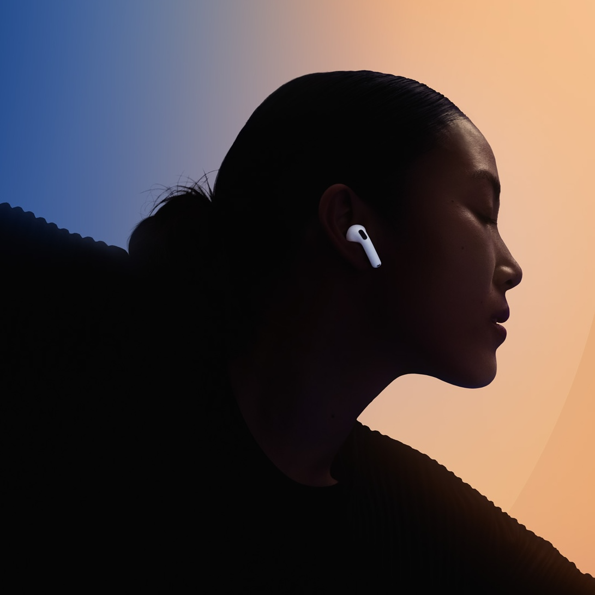
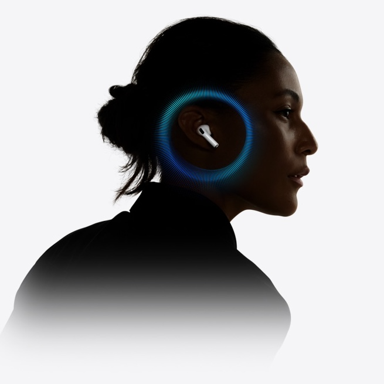

Problem
- Hearing aids cost thousands, take weeks to fit, and carry a stigma most people will not accept.
- So people wait. Years, usually, and many never get past the clinic door at all.
- Meanwhile the hardware sitting in their pocket already met the spec.
Solution
- Built a mobile hearing test validated against a machine learning model trained on hundreds of thousands of audiograms and their real-world fittings.
- Wrote the resulting audiogram into Apple Health, which turns AirPods and compatible Beats into low-powered hearing aids.
- Priced it as a small monthly subscription instead of a medical device purchase, on hardware people already own.
Outcome
Roughly 50x cheaper than a fitted hearing aid.
- Acquired. Terms confidential.
- Co-founded and led product from audiogram research through to a shipped iOS product.